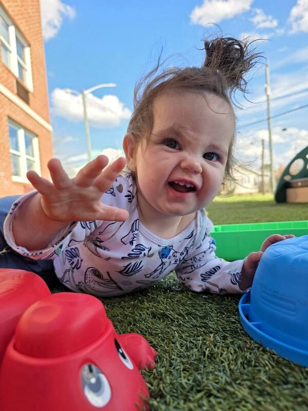
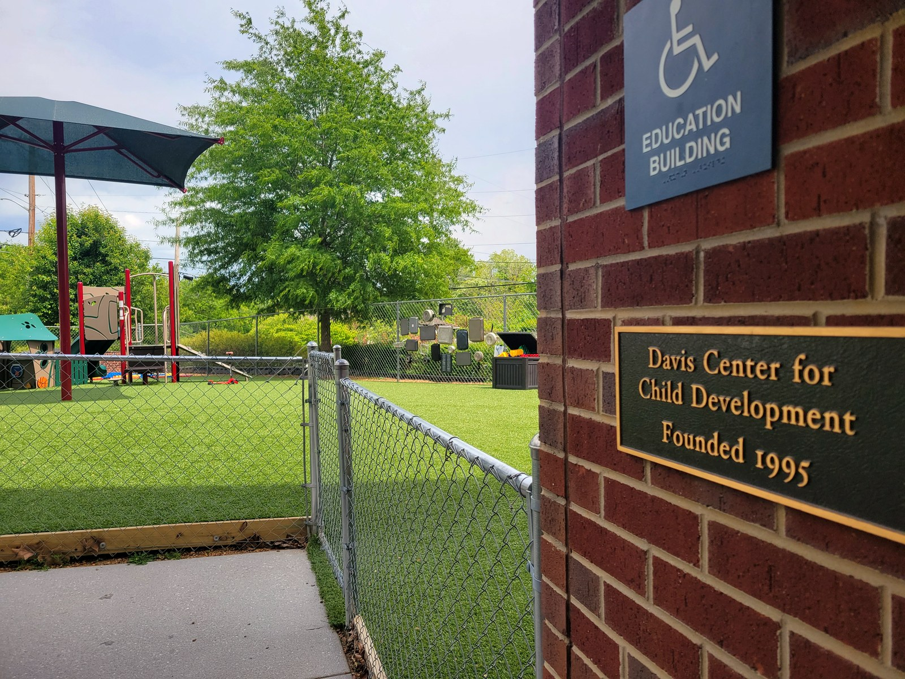

Knoxville · Faith-Based · Since 1995
Where children are rooted in love.
Full-time, year-round childcare for Knoxville families. Thirty years of patient, attentive, faith-grounded care — for infants through preschoolers, every day of the year.

Full-time · year-round
Infants through preschool
501(c)(3) non-profit
Faith-based care
30+ years in Knoxville

Our Foundation
Three decades of caring for Knoxville families.
Since 1995, the Davis Center has been a steady, loving place for children to learn, play, and grow. We're a non-profit, faith-based program — same neighborhood, same commitment, year after year.
Tuition that's fair for working families. Care that goes well beyond what fair tuition usually buys.
- 30+ years of full-time, year-round care in Knoxville
- 501(c)(3) faith-based non-profit — no shareholders, no franchise
- At or below area average tuition — above-average care
Rooted and established in love. Ephesians 3:17